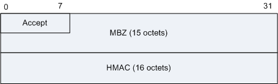
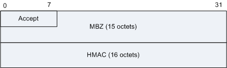

TWAMP：Two-way Active Measurement Protocol(TWAMP)，双向测量协议，用于对丢包、时延和抖动等进行性能监控。
TWAMP是基于TCP连接进行协商和利用UDP报文进行测量。TWAMP的端口号可配置。
TWAMP工作时序图
TWAMP控制报文格式
图1 Server Greeting消息格式
| 字段 | 长度 | 描述 |
|---|---|---|
| Modes | 4 bytes |
如果值为0，表示服务器不希望和客户端交互，可能会立刻关闭连接。 |
| Challenge | 16 bytes | 服务器生成的随机数，用于接收者对共享秘钥的处理中。 |
| Salt | 16 bytes | 用于从共享秘钥中提出秘钥的一个参数。 |
| Count | 4 bytes | 用于从共享秘钥中提出秘钥的一个参数，2的次幂 |
| MBZ | 12 bytes | 置0，接收时忽略。 |
图2 Set-Up-Response消息格式
| 字段 | 长度 | 描述 |
|---|---|---|
| Modes | 4 bytes | 认证模式 |
| KeyID | 80 bytes | 用于认证或加密模式中。不认证模式中，不使用此字段。 |
| Token | 64 bytes | 用于认证或加密模式中。不认证模式中，不使用此字段。 |
| Client-IV | 16 bytes | 用于认证或加密模式中。不认证模式中，不使用此字段。 |
图3 Server Start消息格式
| 字段 | 长度 | 描述 |
|---|---|---|
| MBZ | 15 bytes | 置0，接收时忽略。 |
| Accept | 1 byte | 表示服务器意愿继续交互，0表示服务器接受认证，愿意后续交互。非0表示服务器不接受认证。 |
| Server-IV | 16 bytes | Server-IV是服务器随机产生的，Server-IV不用于不认证模式。 |
| Start-Time | 8 bytes | 时间戳，代表服务器当前操作开始的时间。 |
| MBZ | 8 bytes | 置0，接收时忽略。 |
图4 Request TW-Session消息格式
| 字段 | 长度 | 描述 |
|---|---|---|
| MBZ | 4 bits | 置0，接收时忽略。 |
| IPVN | 4 bits | 发送和接收者的IP版本号，当前有效值为4或6。 |
| Conf-Sender | 1 byte | 客户端设置为0或1。服务器将所有非0值解析为1。如果值为1，表示要求服务器配置对应的代理。 |
| Conf-Receiver | 1 byte | 客户端设置为0或1。服务器将所有非0值解析为1。如果值为1，表示要求服务器配置对应的代理。 |
| Number of Schedule Slots | 4 bytes | 表示在两块HMAC之间的槽位记录数量，发送者用来确认发送测试报文的时间。 |
| Number of Packets | 4 bytes | 在TWAMP测试会话中发送的主动测量报文的数量。 |
| Sender Port | 2 bytes | 如果Conf-Receive不置位，发送端口是指发送TWAMP测试报文的UDP端口。 |
| Receiver Port | 2 bytes | 如果Conf-Receive不置位，接收端口是指接收TWAMP测试报文的UDP端口。 |
| Sender Address | 4 bytes | TWAMP测试会话的发送者IP地址。 |
| Receiver Address | 4 bytes | TWAMP测试会话的接收者IP地址。 |
| SID | 16 bytes | 会话ID，只有Conf-Receiver为0才有意义。 |
| Padding Length | 4 bytes | 普通TWAMP测试报文的Padding字节数。 |
| Start Time | 8 bytes | 会话发起的时间。格式与TWAMP-Test的时间戳相同。 |
| Timeout | 8 bytes | 超时或时延阈值，时间戳格式。 |
| Type-P Descriptor | 4 bytes | 前两比特如果为00，后面6个比特指定了发送的TWAMP测试报文的DSCP值（RFC2474定义的DSCP）。 前两比特如果为01，后面16个比特标识要求的PHB Identification Code (PHB ID)(RFC2836定义的）。 |
| MBZ | 8 bytes | 置0，接收时忽略。 |
| HMAC | 16 bytes | TWAMP使用的HMAC是HMAC-SHA1，128比特，所以HMAC字段为16字节。 |
图5 Accept Session消息格式
| 字段 | 长度 | 描述 |
|---|---|---|
| Accept | 1 byte | 表示服务器意愿继续交互，0表示服务器接受认证，愿意后续交互。非0表示服务器不接受认证。 |
| MBZ | 1 byte | 置0，接收时忽略。 |
| Port | 2 bytes | 回应消息中Port的含义取决于请求消息中的Conf-Sender和Conf-Receiver的值。如果两者都置位，则Port字段是不使用的。如果只是Conf-Sender置位，则Port表示接受TWAMP-Test报文的端口。如果只是Conf-Receiver置位，Port表示TWAMP-Test报文发送的端口。 |
| SID | 16 bytes | 如果只发送了Conf-Sender，回应消息里的SID字段是不使用的。否则，SID唯一标识一个会话。 |
| MBZ | 12 bytes | 置0，接收时忽略。 |
| HMAC | 16 bytes | TWAMP使用的HMAC是HMAC-SHA1，128比特，所以HMAC字段为16字节。 |
图6 Start Session消息格式

图7 Start ACK消息格式


| 字段 | 长度 | 描述 |
|---|---|---|
| Accept | 1 byte | 如果是非0值，Start-Sessions请求将被拒绝。0表示接受。 |
| MBZ | 15 bytes | 置0，接收时忽略。 |
| HMAC | 16 bytes | TWAMP使用的HMAC是HMAC-SHA1，128比特，所以HMAC字段为16字节。 |
图8 Stop Session消息格式
| 字段 | 长度 | 描述 |
|---|---|---|
| Accept | 1 byte | 如果是非0值，表示故障，0表示正常。 |
| MBZ | 2 bytes | 置0，接收时忽略。 |
| Number of Sessions | 4 bytes | 表示Control-Client即将停止的会话的数量。 |
| MBZ | 8 bytes | 置0，接收时忽略。 |
| HMAC | 16 bytes | TWAMP使用的HMAC是HMAC-SHA1，128比特，所以HMAC字段为16字节。 |
TWAMP测量报文的格式
图9 Sender-test
图10 Reflector test
| 字段 | 含义 |
|---|---|
| Sequence Number | 根据传输顺序生成的报文序列号。从0开始并逐包增加，每个报文分配一个序号。Session-Reflector生成的报文序列号与到达的报文的序列号无关。 |
| MBZ | 必须填为0，客户端忽略此字段。 |
| Timestamp | 时间戳字段表示Session-Reflector反射的检测报文所打上的传输时间戳。其定义和格式请参见OWAMP标准[RFC4656]的第4.1.2章节。 时间戳的格式与OWAMP [RFC4656]标准定义的时间戳格式相同，如下： 图11 时间戳字段的格式
与RFC1305标准定义的时间戳格式相同，前32比特表示从1900年1月1日0时至今的秒数的整数部分，后32比特表示小数部分。 |
| Error Estimate | 错误检测字段表示Session-Reflector反射的错误检测，其定义和格式请参见OWAMP标准[RFC4656]的第4.1.2章节。 错误检测字段指定了错误的检测和同步。其格式如下： 图12 Error Estimate字段格式
|
| Sender Timestamp和 Sender Error Estimate | 这两个字段是从Session-Sender的检测报文的对应字段里复制过来的。 |
| Sender TTL | Session-Sender发送的检测报文的Sender TTL设置为255。Session-Reflector发送的检测报文里的Sender TTL设置为IP报文头的TTL值。 |
| Receive Timestamp | 表示Session-Reflector接收到检测报文的时间。 |
| Sender Sequence Number | 发送序列号是从Session-Sender发送的报文的序列号复制的。 |
| HMAC | TWAMP测量报文的HMAC字段包含了AES（Advanced Encryption Standard）加密的字段，所以在认证模式下，HMAC包含了第1个块（16字节）。在加密模式下，HMAC包含了前6个块（96字节）。TWAMP测量报文中，HMAC字段不能被加密。 |
| Packet Padding | TWAMP测量报文的报文填充字段。该字段不能被加密。 TWAMP测量报文的数据段在非认证模式时最小长度为41字节，认证模式或加密模式下最小长度为104字节。 |
参考标准
| 标准 | 描述 |
|---|---|
| RFC 5357 | Two-Way Active Measurement Protocol |
| RFC 4656 | A One-way Active Measurement Protocol (OWAMP) |